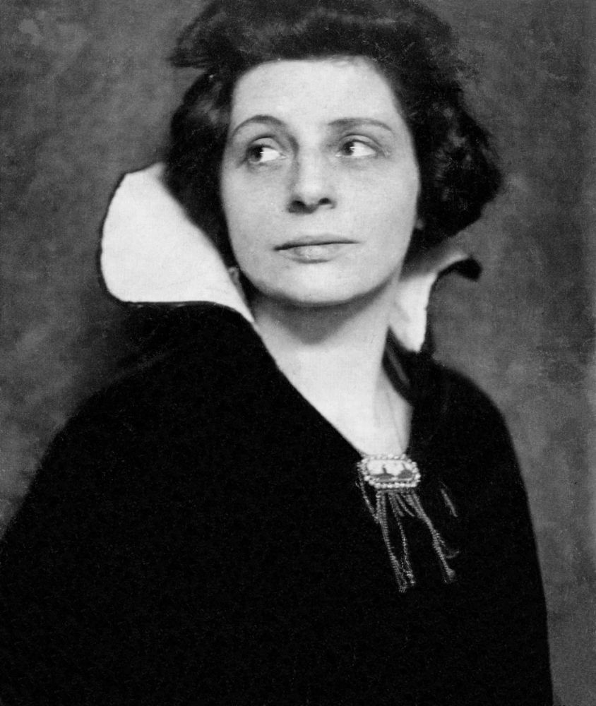

Loulou Albert-Lazard
Malarkę Loulou Albert-Lazard poznał Rilke późnym latem roku 1914 w Irschenhausen w dolinie Izary. To właśnie w okresie znajomości z Loulou, nazywaną Lal, powstały niezapomniane wiersze Wciąż tak samo, choć znamy krajobraz miłości, Porzucony na górach serca czy Początek miłości.
Dla Loulou napisał Rilke także poniższe wersy:
Niby ptaki, które obok wielkich
dzwonów żyją pośród belkowania,
od zabrzmiałych uczuć naraz
wyrzucone w przestwór letni
i wyparte w swoje loty
własnoręczny kreślą podpis
swoich pięknych
trwóg dookoła wieży:
przy tych tonach wzruszających
w naszych sercach zostać nie umiemy…
Loulou Albert-Lazard jest autorką niezwykłego portretu Rilkego, namalowanego w czerwcu roku 1916 w Rodaun.